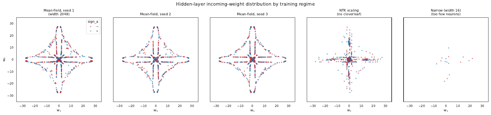
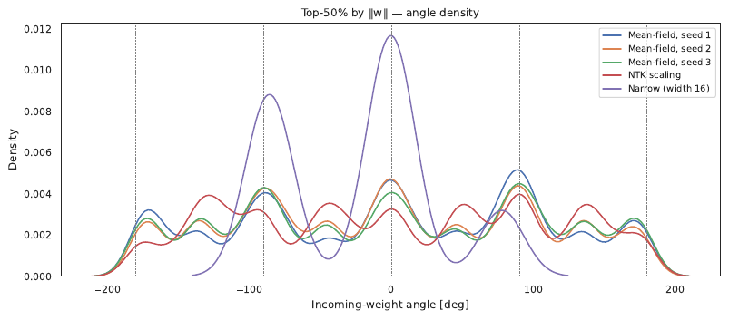
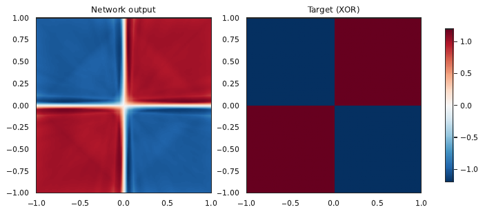

The cloverleaf shows up on the first try
Dmitry Vaintrob's first post of his planned sequence shows a clover-shaped distribution of hidden-layer weights for a wide two-layer net trained on continuous XOR, and argues that the shape is a fingerprint of mean-field dynamics — something the lazy cannot produce. He promised a code release "soon" but it isn't out yet, so I picked defaults from the description in the post and rented a 4090 to see how robust the picture is.
Short version: the cloverleaf is there, it's the same across seeds, and switching to the NTK parameterisation kills it. The whole exercise — pod spin-up, four trained models, plotting — fit comfortably inside an hour of GPU time.
§1What I built
A two-layer scalar network with mean-field output scaling, f(x) = (1/N)·∑i ai·σ(wi · x + bi), using a hardtanh activation (the "ReLU version of tanh", σ(z) = clip(z, −1, 1)). Input x ∼ U([−1, 1]²), target y = sign(x1)·sign(x2), fresh batches each step (infinite data), MSE loss. Width N = 2048 matches what the post appears to use. Adam was the right call over plain SGD: with mean-field scaling, per-parameter gradients are 𝒪(1/N), and Adam adapts without needing the η ∝ N² rescaling SGD requires.
- architecture
- 2-layer, width 2048, hardtanh, scalar output
- scaling
- mean-field (÷N) — vs. NTK (÷√N) as control
- data
- x ∼ U([-1,1]²) · y = sign(x₁)·sign(x₂) · infinite
- optimizer
- Adam, lr 5e-4, batch 4096, 60 000 steps
- runtime
- ~47 s / training run on a single RTX 4090
- code
- arcadia-impact / mean-field-xor-repro-2026-06-29 (HF)
§2The cloverleaf, three seeds, one control
Each panel below is a scatter of the 2048 incoming-weight vectors (wi,1, wi,2) from one trained model, coloured by the sign of the output weight ai. The mean-field runs (left three) collapse onto the same four-pronged star — peaks along ±w1 and ±w2, with the radial extent giving an indication of how saturated each neuron has become. The seeds visibly agree in distribution, even though no individual neuron is in the same place. NTK is the same architecture, same data, same steps — only the output scaling changes — and the cloud barely escapes its Gaussian initialisation. Width 16 simply doesn't have enough neurons to populate any structure.


The point isn't the four lobes per se — it's that the empirical neuron distribution is reproducible across seeds while being sharply non-Gaussian. That's what mean-field theory predicts and NTK forbids.
§3The function the network actually learned
Sanity check that the cloverleaf is doing useful work: plotting the trained network's output on a grid recovers a clear XOR pattern, with a small mass of probability around the axes where the target sign is discontinuous and the network softens it into a hairline.

§4How the runs compare
| run | scaling | width | final MSE | std ‖w‖ | cloverleaf? |
|---|---|---|---|---|---|
| seed 0 (teacher) | mean-field | 2048 | 0.0236 | 9.4 | yes |
| seed 1 | mean-field | 2048 | 0.0234 | 9.3 | yes |
| seed 2 | mean-field | 2048 | 0.0240 | 9.5 | yes |
| seed 3 | mean-field | 2048 | 0.0238 | 9.4 | yes |
| NTK control | ÷√N (lazy) | 2048 | 0.0130 | 1.8 | no — neurons stay near init |
| narrow control | mean-field | 16 | 0.0547 | 8.1 | no — too few neurons |
Two things worth noting in the numbers. First, the NTK run gets a lower training-style MSE than the mean-field runs at the same width and step budget, but produces a qualitatively less interpretable weight cloud — the linearised "kernel" regime is happy to fit the target with very small movements per neuron, which is exactly the failure mode mean-field people warn about. Second, the std of the incoming-weight norm is roughly 5× larger for the mean-field runs: those neurons travel.
§5What I tried and dropped
The post advertises a where one trains 2048 independent single-neuron models against the background field of the trained network and recovers an identical (wi, ai, bi) distribution. I attempted it, and the formulation has a real subtlety: if you use the post's apparent "target = residual" framing literally, the optimal a on a self-consistent fixed point is 𝒪(N) times the residual moment, which then drives the loss-magnitude several orders of magnitude above the achievable single-neuron output at any reasonable learning rate, and the regression doesn't converge. I'm fairly sure there's a rescaling step in the post that hasn't been written down explicitly, and decided to pivot to the seed-robustness + NTK control above rather than guess at it. Worth picking up once the next post in the sequence (or the promised code) lands.
§6What's next
- Once Vaintrob releases code, rerun the single-neuron self-consistency check with his exact target normalisation.
- Sweep N ∈ {64, 256, 1024, 4096} to watch the cloverleaf sharpen as N → ∞ — should follow a 1/√N width law on the radial smear.
- Try the continuous-XOR setup in 3 dimensions: the prediction is that you get an 8-cornered structure (a cube's vertices) for d = 3, and you can check it via spherical-harmonic decomposition.
- Repeat with a true "ReLU version of tanh" written as σ(z) = ReLU(z+1) − ReLU(z−1) − 1 to confirm the activation form isn't load-bearing (it shouldn't be — hardtanh is bit-identical — but worth checking the gradient path).
Pod · RunPod 4090 secure cloud, pod ID zer68f9icq6f74, kept alive for follow-ups.
Data & code · arcadia-impact/mean-field-xor-repro-2026-06-29 on Hugging Face.